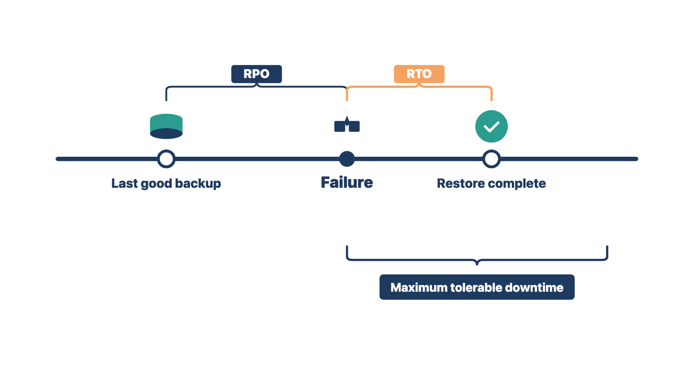

Months later, someone will ask why a setting was approved or how a defect was closed. If the answer lives in personal email, nobody can find it.
Audit-ready means the clinic can find complete, clear evidence for an approved purpose. It should not have to rebuild the project from memory. It does not mean every audit will pass, and you should never promise that.
Assemble:
Then test retrieval. Ask someone who did not build the record to find the evidence for a requirement, an approval, a defect closure, or a converted patient group. If that person cannot follow the trail, the record is not ready.
Rule: Evidence is ready only when someone who did not build it can find it.
Example A. The Cedar Point billing manager did not build the audit index. She looks for the approval of the claim workflow and finds the signed decision in two minutes. Example B. A QC analyst at a family clinic looks for the closure of a printing defect. The retest result is only in the builder's personal email. You move it into the project record and repeat the test. In both cases, the test is whether another person can follow the trail.
Check yourself
Every system fails at some point. Before go-live, the client must decide how long each critical function can be down and how much recent data it can afford to lose.
Two terms carry those decisions:
Some clinics also set a maximum tolerable downtime. This is the longest outage the clinic can survive before patient care or the business is seriously harmed. The RTO must fit inside it.
For example, a clinic sets an RPO of 15 minutes and an RTO of 4 hours for its EHR. After a failure, staff may need to re-enter up to 15 minutes of work from downtime forms. They should expect to work on paper for up to 4 hours.

You do not choose these values. You gather the facts, show the gaps, and get a written decision.
For each critical function, the recovery record holds:
The 2025 SAFER Contingency Planning guide from the Office of the National Coordinator for Health Information Technology (ONC) recommends regularly tested backups of patient data and setup. It suggests a complete restore test, ideally monthly, and a setup backup before every upgrade. It also recommends a read-only backup copy of the EHR that users can print from during downtime. For cloud-hosted EHRs, it says the provider should back up data by any means needed for full recovery.
The Health Insurance Portability and Accountability Act (HIPAA) Security Rule requires a contingency plan. The plan must include a data backup plan, a disaster recovery plan, and an emergency mode operation plan. Testing the plan and ranking the most critical applications and data are "addressable" parts of the rule. Addressable means the organization must assess them and record its choice. The client's security official owns HIPAA compliance. You make sure the go-live evidence exists and is filed.
Rule: Named owners approve the RTO and RPO in writing, and a restore test supports them.
Example A. For scheduling, the practice administrator says the front desk can work from printed schedules for 8 hours. The vendor's restore test took 5 hours. She approves an RTO of 6 hours in writing. Example B. For claims, the billing manager accepts an RTO of 24 hours and an RPO of 1 hour. The same restore test shows the vendor can meet both. She signs the recovery record. In both cases, the owner of the function decided in writing, and a tested restore supports the values.
Check yourself